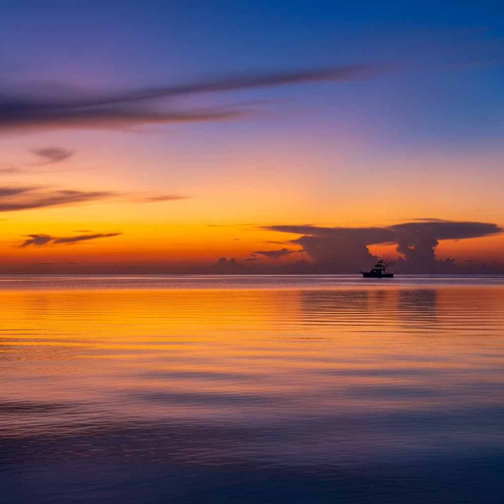
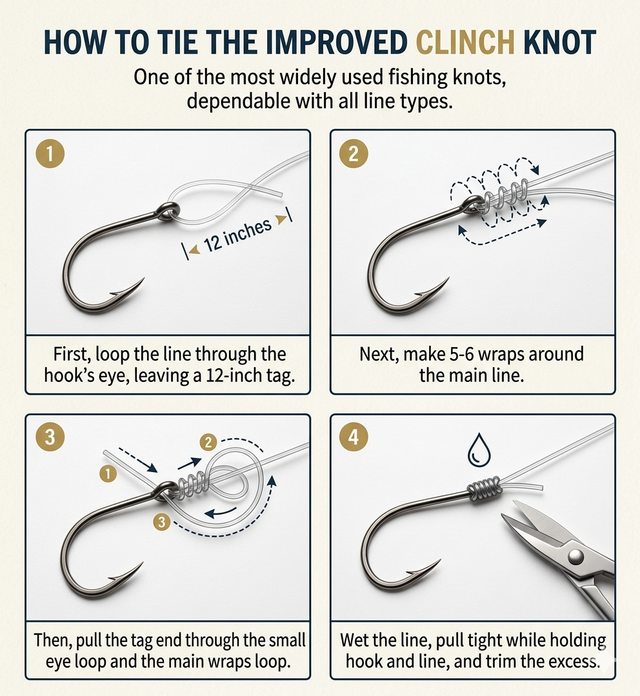

Your knot represents the weakest link between you and the fish of a lifetime. Always take your time and tie a good knot — using good quality line will also allow you to tie a better, stronger knot.
How to Tie the Improved Clinch Knot
Step 1: Pass line through the eye of the hook. Leave about 12 inches of free line.
Step 2: Make 4 to 6 wraps around the main line with the free end.
Step 3: Bring the free end back through the eye of the hook, then back through the loop formed in the line.
Step 4: Moisten the line and while firmly holding the hook in one hand and free line in the other hand, pull the knot tight. Trim off excess.

The Improved Clinch Knot is one of the most widely used fishing knots in the world. It's fast to tie, dependable under pressure, and works with mono, fluoro, or braid — making it a must-know for every angler.